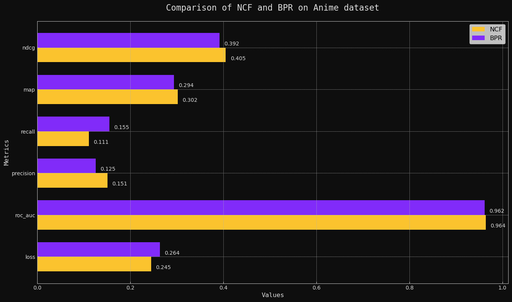
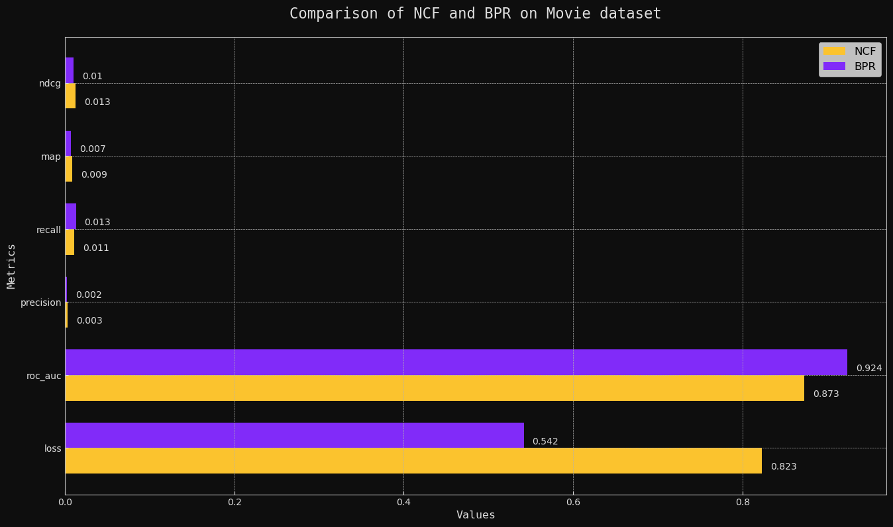

Visualization of Evaluation Metic Results of Collaboative Filtering Recommendation Models
The below plot that compares the performance of four different recommendation models on six evaluation metrics. These models include two collaborative filtering models (NCF) and two Bayesian personalized ranking models (BPR) for anime and movie recommendations. The evaluation metrics used are loss, ROC AUC, precision, recall, MAP, and NDCG. The resulting plot allows for a visual comparison of each model's performance on each metric, providing insight into their overall effectiveness for recommendation tasks.
Check out our NCF and BPR Recommendation System
Click Here


Models:
- Anime NCF: a neural collaborative filtering model for anime recommendations.
- Anime BPR: a Bayesian personalized ranking model for anime recommendations.
- Movie NCF: a neural collaborative filtering model for movie recommendations.
- Movie BPR: a Bayesian personalized ranking model for movie recommendations.
Metrics:
- Loss: the loss function used to train the models.
- ROC AUC: the area under the receiver operating characteristic curve, which measures the ability of the model to distinguish between positive and negative examples.
- Precision: the fraction of relevant instances among the retrieved instances.
- Recall: the fraction of relevant instances that have been retrieved over the total amount of relevant instances.
- MAP (Mean Average Precision): the average of the average precisions calculated for each query.
- NDCG (Normalized Discounted Cumulative Gain): a measure of ranking quality that takes into account the position of relevant items in the ranking.
The plot shows how each model performs on each metric, allowing for comparison and evaluation of their overall performance.